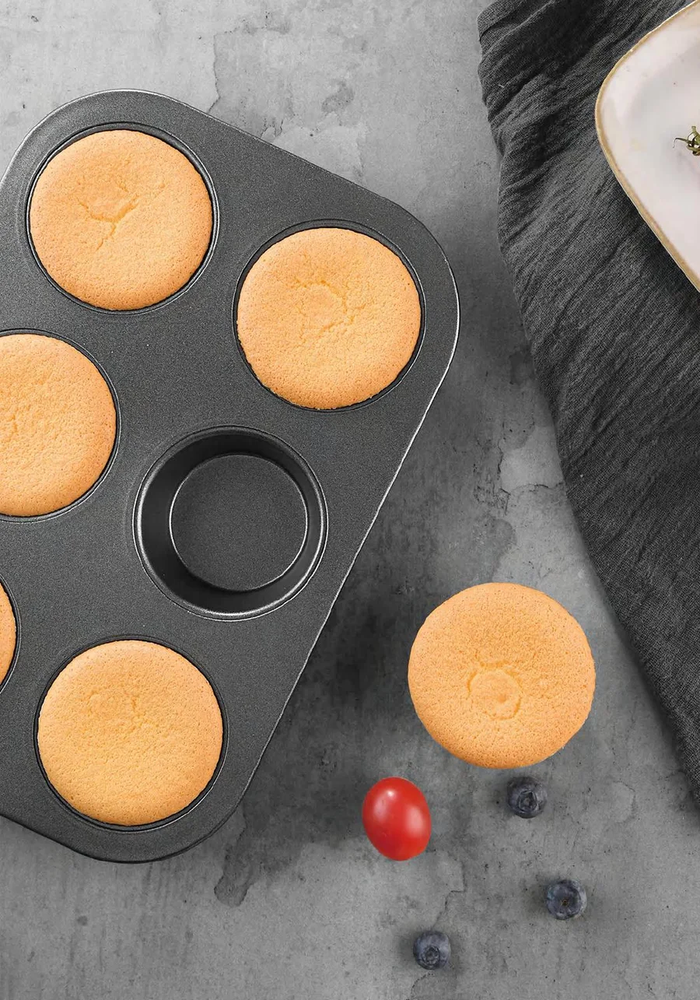
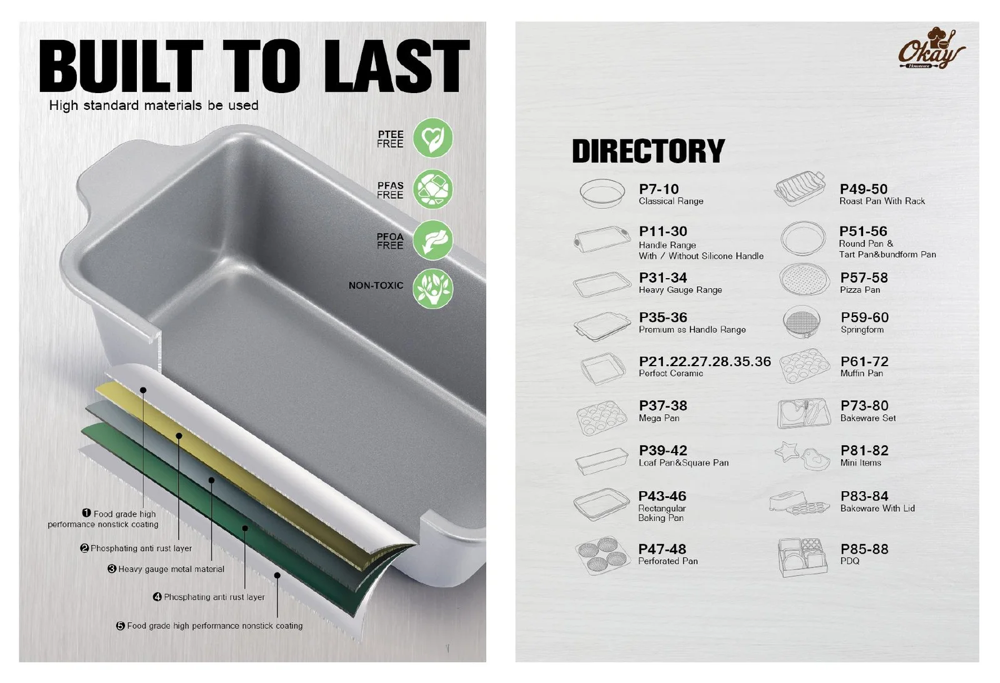
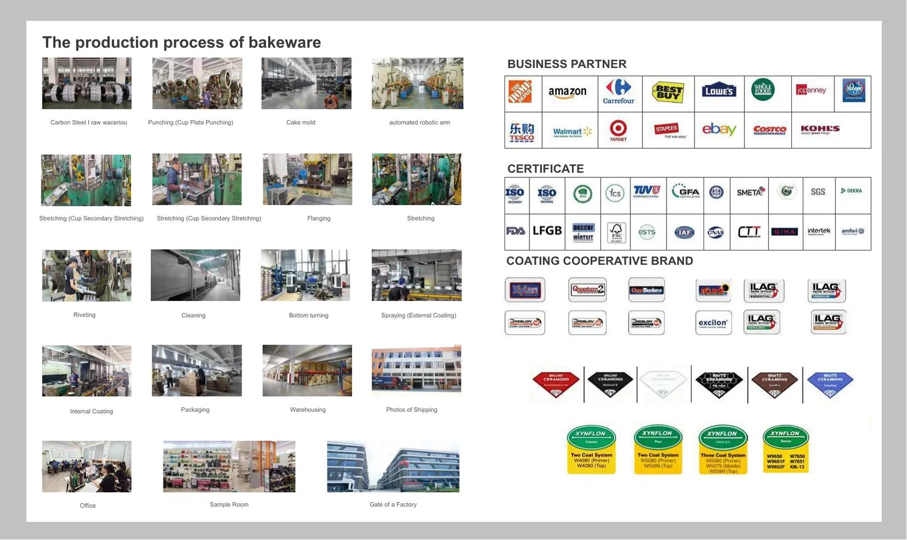

Mini format
For bite-size portions and compact liners. Confirm small-cavity coating coverage and release expectations.

Source mini, standard, jumbo or project-specific muffin pans with controlled cup geometry, material, coating, cavity count and retail packaging. Exact dimensions, MOQ and timing are confirmed after the project brief is reviewed.
Send LINHAO your liner dimensions or pan drawing, preferred metal and coating, packaging brief, order quantity and destination market. Twelve cups specify the cavity count. Two 12-cup pans can fit different liners or require different retail boxes.
| Specification | Published product range | What to confirm for your order |
|---|---|---|
| Cup and pan dimensions | 12 cavities. Cup size varies by mold. | Send the liner or drawing with cup top and base diameters, depth, spacing and overall pan dimensions in mm. Include the rim and grips in the footprint. |
| Material and thickness | The catalog includes carbon steel and aluminum, with 0.4, 0.6, 0.7 and 0.8 mm constructions across the range. | Choose a preferred substrate and gauge. Ask LINHAO to confirm which combinations are available for the selected 12-cup mold. |
| Coating and finish | The range includes classic nonstick, ceramic-style, speckled, metallic and bright-color finishes. | Send a color reference, intended use and destination market. Confirm the coating chemistry and applicable test documents for the exact finish. |
| Tooling and samples | LINHAO can review an existing mold or evaluate a drawing or physical sample for custom tooling. | Request a mold match first. Agree on the sample route, cost and timing. Check liner fit, rim dimensions, release and finish on the sample before approval. |
| Branding and packaging | Options include embossed or printed logos, labels, paper sleeves, inserts, color boxes and marked master cartons. | Send artwork, logo position and retail pack format. Check the packed sample for fit, surface protection and barcode placement before printing. |
| Quantity and delivery | MOQ, tooling cost and lead time are quoted for each project. | Give the first-order quantity, intended market and required delivery date. Ask for sample timing and production timing separately. |
Before production: Approve the reference sample, drawing revision, finish and retail pack. For a food-contact documentation request, identify the destination market and ask for records matching the chosen substrate and coating.
Mini, standard and jumbo are useful retail labels. A supplier quote still requires the cup geometry, cavity count and complete pan footprint.
For bite-size portions and compact liners. Confirm small-cavity coating coverage and release expectations.
For familiar muffins and cupcakes. Control liner base, fill level, spacing and finished profile.
For larger portions. Review deeper forming, rigidity, batter load, pack height and oven fit.
Start from a drawing, sample or dimensional brief when existing molds do not match the program.
No universal sampling lead time is claimed. The route and schedule are confirmed only after tooling, finish, packaging and buyer approvals are defined.
Review cup geometry, cavity count, pan footprint, market, quantity and reference information.
Define material, thickness, coating, color, logo, packaging and requested evidence.
Prepare an existing-mold sample, customized-finish sample, new-tool prototype or packaging mockup as applicable.
Check dimensions, liner or fill fit, appearance, handling, release expectations and packaging.
Freeze the approved sample, drawing, coating, color, artwork and inspection criteria.
Schedule production after commercial terms and all required approvals are complete.

Send the target specification, quantity, packaging and destination market. LINHAO then confirms feasibility, sampling route and a project-specific quotation.
Based on existing or new tooling, coating batch, packaging method and production setup.
Material, gauge, finish, color and food-contact requirements are reviewed against the intended market.
Start from an available format, technical drawing, reference sample or target dimensions. Compare mini, standard and jumbo formats. Review the muffin pan size planning guide before submitting the cup specification.
Sampling and mass-production timing are quoted separately after tooling, finish and packaging are confirmed.
Labels, sleeves, inserts, color boxes, master cartons, shipping marks and pack-out can be reviewed.
Geometry, coating, color, logo application, accessories and packaging artwork can be developed.
Project claims and available records are checked against the selected product, coating, production route and destination-market requirements.
Factory imagery shows the production environment used for metal forming, pan processing and project execution. Buyers may request project-relevant factory information during qualification.

Material, construction, coating, packaging and available test documentation are reviewed against the approved specification before shipment.
Product dimensions, material or target weight, thickness, coating, color, logo method, packaging, expected quantity and destination market.
Yes. A reference sample, drawing, target dimensions or clear product photos can be used for initial evaluation. Final feasibility is confirmed through engineering review.
MOQ depends on mold status, coating color, packaging method and production setup. It is quoted project by project rather than displayed as a universal online number.
We will organize suitable existing products or a custom development route.